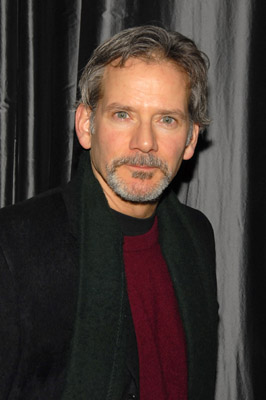
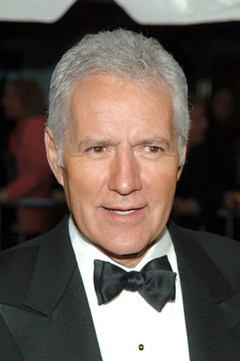

#5749 Entscheidung aus Liebe
Alternativ: Dying Young

 IMDB-Wertung: 5.9 / 10
IMDB-Wertung: 5.9 / 10  Metascore: 0
Metascore: 0 
Eine feudale Villa im Reichenviertel San Franciscos: Hier arbeitet seit kurzem die schöne Hilary als Pflegerin von Victor. Schon bald verlieben sich das flatterhafte Mädchen aus der grauen Vorstadt und der Millionärssohn ineinander. Zusammen entfliehen die beiden dem tristen Alltag, Victor mietet ein Traumhaus an der kalifornischen Küste. Dort erleben sie grenzenlose Romantik. Ihre Liebe verändert beide Menschen, während Hilary Spaß an Kunst und Geschichte findet, entdeckt Victor zum ersten Mal das echte Leben. Aber schon bald holt die Realität die beiden in ihrem Liebesnest ein, denn Victor ist nicht umsonst pflegebedürftig: Er leidet an einer lebensbedrohenden Krankheit. Victors und Hillarys Liebe wird auf eine harte Probe gestellt...
Jahr: 1991
Dauer: 111 Minuten
FSK: 12
Land: USA Studio: 20th Century FoxTonspuren: DD2.0 - ,
Untertitel:
Auflösung: 1080p (1920x1040) Größe: 8949 MB
Genre: Drama, Liebe
Regisseur:  Joel Schumacher
Joel Schumacher
Drehbuch: Nadine Gottmann
Soundtrack:
Darsteller:
 Julia Roberts als Hilary O'Neil
Julia Roberts als Hilary O'Neil-  Campbell Scott als Victor Geddes
 Vincent D'Onofrio als Gordon
Vincent D'Onofrio als Gordon- Colleen Dewhurst als Estelle Whittier
 David Selby als Richard Geddes
David Selby als Richard Geddes Ellen Burstyn als Mrs. O'Neil
Ellen Burstyn als Mrs. O'Neil- Dion Anderson als Cappy
- A.J. Johnson als Shauna
- Daniel Beer als Danny
- Behrooz Afrakhan als Moamar
-  Alex Trebek als Host of Jeopardy
- Richard Friedenberg als Jeopardy Contestant
- Howard Morris als Jetsons Character , archive footage
- Tim Bohn als Guest
- Priscilla Alden als Nurse , uncredited
 George Martin als Malachi
George Martin als Malachi- Michael Halton als Gordon's Friend
- Larry Nash als Assistant
- Duncan Henderson als Jeopardy Contestant
- Bettina Rose als Jeopardy Contestant
- Fran Lucci als Annabel
- John M. Rosenberg als Bandleader
- Patrick Cage als Shauna's Boyfriend
- Holly Del Russo als Child in Hospital
- Trevor Fant als Child in Hospital
- Kevin O'Connor als Child in Hospital
- Lauren Oymainan als Child in Hospital
- Erin Vallely als Child in Hospital
- Ron Krauss als Hilary's Nightclub Friend , uncredited
Datei: X:\1991\Entscheidung aus Liebe (1991, FSK12, 1920x1040).mkv seit 17.03.2017
Festplatte: HD 1987-1991
 Es gibt insgesamt 53 Filme in der Gruppe '1991'
Es gibt insgesamt 53 Filme in der Gruppe '1991'